Athena Computer
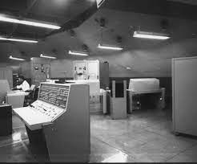
- Type
- Test-range guidance system
- Role
- Command-guided vehicle testing
- Operator
- United States Air Force
- Era
- Late 1950s–1960s

Headquarters, Strategic Air Command
Command, control, and early-warning reference
Command and control
Explore the radar, computing, communications, and warning systems that gave Strategic Air Command the information needed to direct the deterrent force.

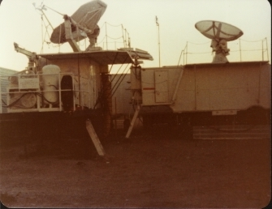
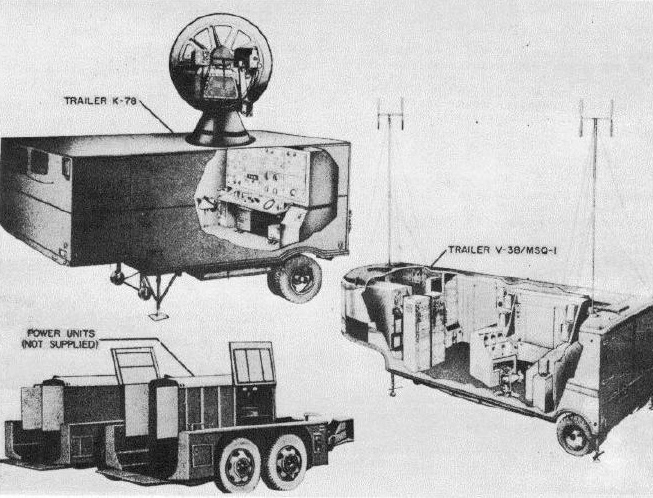
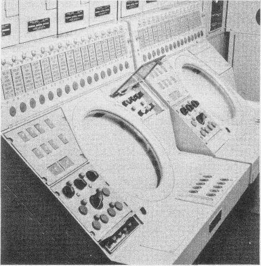
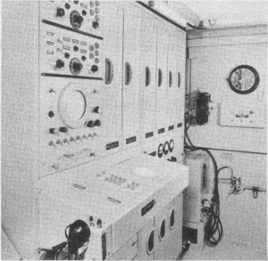
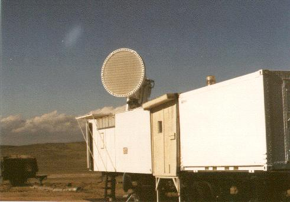
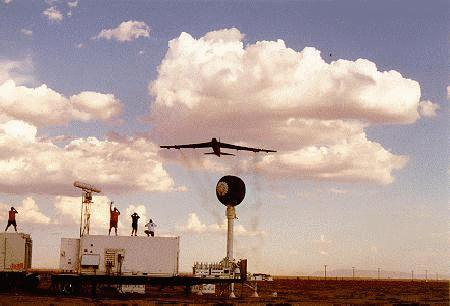
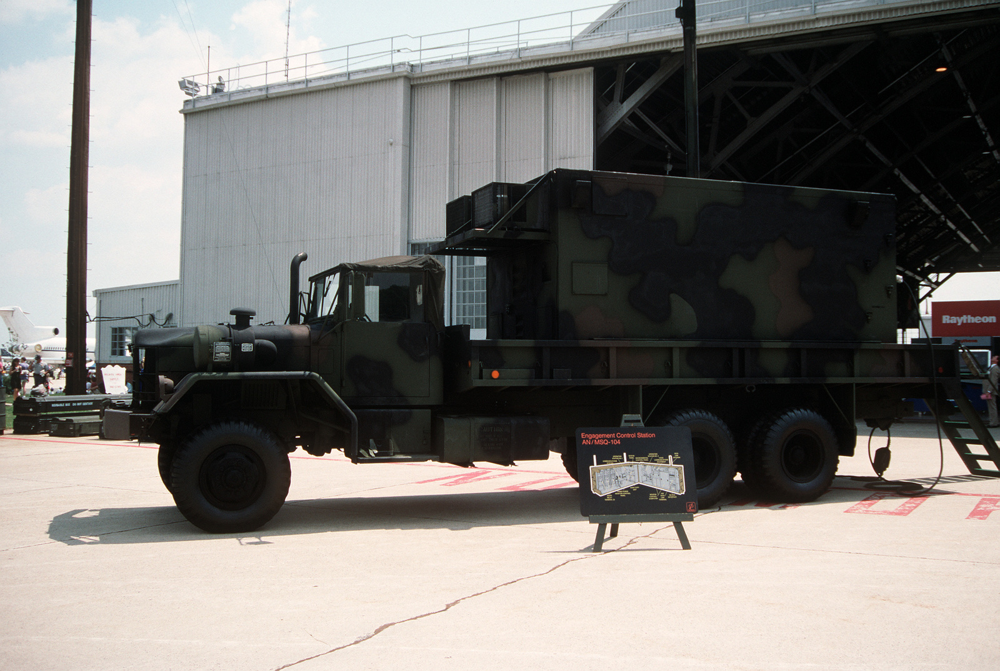
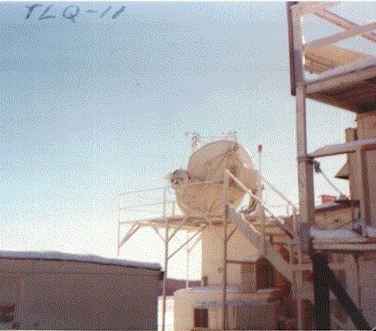
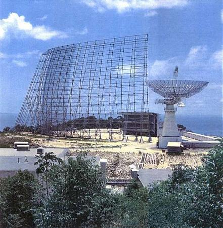
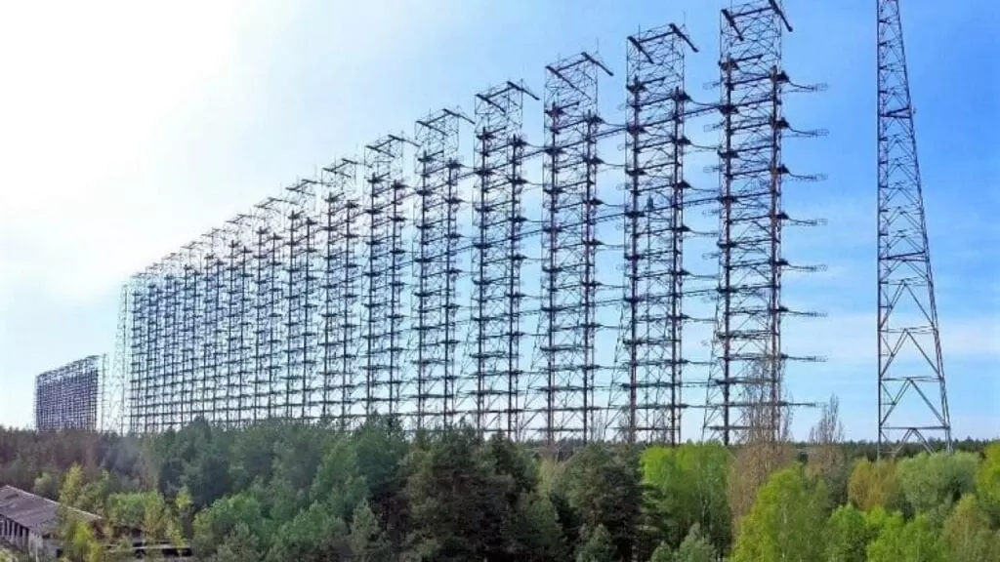
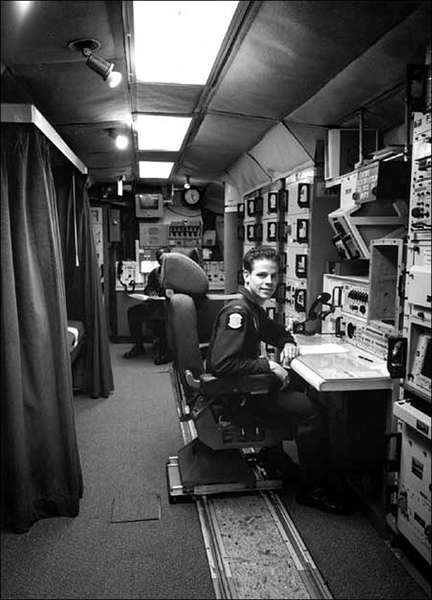